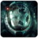

 Returnal
Detalles
 |
|
| Tiempo de juego | No Jugado |
| Última actividad | Nunca |
| Añadido | 11/5/2024 22:37:13 |
| Modificado | 2/5/2025 0:36:55 |
| Estado de finalización | No Jugado |
| Librería | Playnite |
| Fuente | 1 TB EXT |
| Plataforma | PC (Windows) |
| Fecha de lanzamiento | 2/15/2023 |
| Puntuación de la Comunidad | 80 |
| Puntuación de la Crítica | |
| Puntuación de usuario | |
| Género | Acción |
| Desarrollador | Climax Studios Housemarque |
| Editor | PlayStation Publishing LLC |
| Característica | Cloud Saves Compat. Total Con Mando Cooperativo Cooperativo En Línea Logros De Multijugador Préstamo Familiar Un Jugador |
| Enlaces | Punto de encuentro Discusiones Guías Noticias Página de la tienda PCGamingWiki Logros |
| Tag | Acción Ambientales Arcade Ciencia ficción Cooperativos Cooperativos en línea Difíciles Disparos Disparos en tercera persona Espacio Lluvia de balas Metroidvania Multijugador Protagonista femenina Roguelike Roguelike de acción Roguelite Terror Terror psicológico Un jugador |
Descripción
Rompe el ciclo con este galardonado shooter en tercera persona y disfruta de su ritmo trepidante en PC. La odisea roguelike de Selene llega con un conjunto de mejoras gráficas y de rendimiento que garantizan un viaje inolvidable. Incluye el juego Returnal™ al completo, con los modos Suspender ciclo, Foto y Cooperativo, así como la Torre de Sísifo, desde el día de salida.
Tras el aterrizaje forzoso en este mundo cambiante, Selene debe buscar en el desolado paisaje de una antigua civilización para poder escapar. Aislada y sola, tendrá que luchar con uñas y dientes si quiere sobrevivir. Una y otra vez cae derrotada, y se ve obligada a reiniciar su viaje con cada muerte. A través de un rápido sistema de juego roguelike implacable, descubrirás que, conforme el planeta cambia en cada ciclo, también lo hacen los objetos a tu disposición. Cada ciclo ofrece combinaciones nuevas, que te permitirán superar tus límites y afrontar el combate con una estrategia diferente cada vez.
La oscura belleza del mundo decadente del juego, que cobra vida gracias a unos impresionantes efectos visuales, está llena de sorpresas explosivas, desde combates trepidantes y repletos de disparos hasta asombrosos giros y vueltas de tuerca en entornos inhóspitos y llenos de contrastes. Explorarás, descubrirás y lucharás a lo largo de un viaje implacable en el que el peligro acecha cada uno de tus movimientos. Diseñado con una rejugabilidad extrema en mente, el mundo aleatorio de Returnal te invita a reinventarte tras cada derrota y a enfrentarte a nuevos desafíos que evolucionan con cada renacimiento.
Incluye logros, así como un rastreador de progreso dentro del juego. También se han incluido cinco preajustes gráficos con indicadores de rendimiento del juego como un contador de FPS, un medidor del uso de la GPU y la CPU y un medidor de latencia.
Las relaciones de aspecto 16:10, ultraancha (21:9) y superultraancha (32:9) ofrecen un campo de vista ampliado en todo Átropos, con aspectos más amplios que añaden opciones adicionales para las cinemáticas y la interfaz de usuario. Y todo esto en un asombroso 4K.1 En los PC de gama alta, disfrutarás de una inmersión más profunda gracias a los reflejos y sombras con trazado de rayos, que añaden una nueva capa de opciones de iluminación, todas ellas personalizables a través de varios controles deslizantes. El juego también utiliza tecnologías de mejora del rendimiento como DLSS y NIS de NVIDIA, o FSR2 de AMD.
1 Se requieren un PC y un dispositivo de visualización compatibles.
2 Se requieren un PC y una tarjeta gráfica compatibles para gráficos mejorados.
Juega con el mando DualSense™ para experimentar la tecnología háptica y los efectos gatillo dinámicos.3 También puedes utilizar el ratón y el teclado u otros mandos, con botones totalmente personalizables. También se han añadido nuevas opciones de accesibilidad, como una notificación de recarga del retículo de disparo secundario y un sistema de alertas cooperativo. Se ha añadido compatibilidad con Dolby Atmos, así como la opción de seleccionar el tipo de compatibilidad con Audio 3D.4 Escucha el sonido a tu alrededor con una precisión milimétrica que da vida a los entornos y te ayuda a reaccionar.
3 Se necesita conexión por cable para disfrutar de todas las funciones del mando del juego.
4 Los modos de audio 3D requieren auriculares estéreo o altavoces compatibles.
Gracias al modo cooperativo, podrás compartir tu aventura por el cambiante laberinto de Átropos con otro jugador de PC.5La naturaleza hostil de Átropos permanecerá inquebrantable, pero la posibilidad de trabajar en equipo aporta una nueva perspectiva y nuevas formas de sobrevivir. Cada jugador controla una versión distinta de Selene, procedente de un ciclo diferente. Mediante el dispositivo Cronosis situado en cada bioma, el jugador anfitrión invoca a un amigo o se empareja con otro jugador online aleatorio. El progreso del anfitrión determina la lista de objetos disponibles durante la sesión multijugador.
La próxima vez que te despiertes en el lugar del accidente, mira hacia arriba. Deberías ver una puerta que lleva a la Torre de Sísifo, accesible siempre que hayas desbloqueado el rezón icario.5 En esta Torre, prepárate para afrontar un nuevo tipo de desafío. Es un reto de ascenso casi interminable que se centra en el combate, en la puntuación y en tu progreso, con objetos exclusivos, diarios de exploración y fragmentos aún sin descubrir de la historia de Selene.
5 La Torre de Sísifo, las secuencias de la casa y el modo desafío no están disponibles en el modo cooperativo. El crossplay con jugadores de consolas PlayStation®5 no está disponible.
COMBATE INTENSO -Lucha por sobrevivir en este shooter roguelike en tercera persona.
-Enfréntate a enemigos despiadados en combates explosivos con brutales tiroteos.
EXPLORACIÓN EMOCIONANTE - Gestiona el equipamiento y los recursos con cuidado: cada vez que mueras, volverás a empezar desde el principio.
- Recoge tecnología alienígena para mejorar tus habilidades en los próximos ciclos.
UNA NARRATIVA EVOCADORA - Reúne fragmentos de los recuerdos de Selene mientras busca respuestas.
-Forja una conexión personal con el planeta mientras exploras un terreno en constante evolución y deterioro.
CONTEXTO:
Tras el aterrizaje forzoso en este mundo cambiante, Selene debe buscar en el desolado paisaje de una antigua civilización para poder escapar. Aislada y sola, tendrá que luchar con uñas y dientes si quiere sobrevivir. Una y otra vez cae derrotada, y se ve obligada a reiniciar su viaje con cada muerte. A través de un rápido sistema de juego roguelike implacable, descubrirás que, conforme el planeta cambia en cada ciclo, también lo hacen los objetos a tu disposición. Cada ciclo ofrece combinaciones nuevas, que te permitirán superar tus límites y afrontar el combate con una estrategia diferente cada vez.
La oscura belleza del mundo decadente del juego, que cobra vida gracias a unos impresionantes efectos visuales, está llena de sorpresas explosivas, desde combates trepidantes y repletos de disparos hasta asombrosos giros y vueltas de tuerca en entornos inhóspitos y llenos de contrastes. Explorarás, descubrirás y lucharás a lo largo de un viaje implacable en el que el peligro acecha cada uno de tus movimientos. Diseñado con una rejugabilidad extrema en mente, el mundo aleatorio de Returnal te invita a reinventarte tras cada derrota y a enfrentarte a nuevos desafíos que evolucionan con cada renacimiento.
La experiencia completa para PC
Incluye logros, así como un rastreador de progreso dentro del juego. También se han incluido cinco preajustes gráficos con indicadores de rendimiento del juego como un contador de FPS, un medidor del uso de la GPU y la CPU y un medidor de latencia.
Disfruta de una experiencia visual deslumbrante
Las relaciones de aspecto 16:10, ultraancha (21:9) y superultraancha (32:9) ofrecen un campo de vista ampliado en todo Átropos, con aspectos más amplios que añaden opciones adicionales para las cinemáticas y la interfaz de usuario. Y todo esto en un asombroso 4K.1 En los PC de gama alta, disfrutarás de una inmersión más profunda gracias a los reflejos y sombras con trazado de rayos, que añaden una nueva capa de opciones de iluminación, todas ellas personalizables a través de varios controles deslizantes. El juego también utiliza tecnologías de mejora del rendimiento como DLSS y NIS de NVIDIA, o FSR2 de AMD.
1 Se requieren un PC y un dispositivo de visualización compatibles.
2 Se requieren un PC y una tarjeta gráfica compatibles para gráficos mejorados.
Siente la explosión sensorial en primera persona
Juega con el mando DualSense™ para experimentar la tecnología háptica y los efectos gatillo dinámicos.3 También puedes utilizar el ratón y el teclado u otros mandos, con botones totalmente personalizables. También se han añadido nuevas opciones de accesibilidad, como una notificación de recarga del retículo de disparo secundario y un sistema de alertas cooperativo. Se ha añadido compatibilidad con Dolby Atmos, así como la opción de seleccionar el tipo de compatibilidad con Audio 3D.4 Escucha el sonido a tu alrededor con una precisión milimétrica que da vida a los entornos y te ayuda a reaccionar.
3 Se necesita conexión por cable para disfrutar de todas las funciones del mando del juego.
4 Los modos de audio 3D requieren auriculares estéreo o altavoces compatibles.
Modo cooperativo:
Gracias al modo cooperativo, podrás compartir tu aventura por el cambiante laberinto de Átropos con otro jugador de PC.5La naturaleza hostil de Átropos permanecerá inquebrantable, pero la posibilidad de trabajar en equipo aporta una nueva perspectiva y nuevas formas de sobrevivir. Cada jugador controla una versión distinta de Selene, procedente de un ciclo diferente. Mediante el dispositivo Cronosis situado en cada bioma, el jugador anfitrión invoca a un amigo o se empareja con otro jugador online aleatorio. El progreso del anfitrión determina la lista de objetos disponibles durante la sesión multijugador.
Torre de Sísifo:
La próxima vez que te despiertes en el lugar del accidente, mira hacia arriba. Deberías ver una puerta que lleva a la Torre de Sísifo, accesible siempre que hayas desbloqueado el rezón icario.5 En esta Torre, prepárate para afrontar un nuevo tipo de desafío. Es un reto de ascenso casi interminable que se centra en el combate, en la puntuación y en tu progreso, con objetos exclusivos, diarios de exploración y fragmentos aún sin descubrir de la historia de Selene.
5 La Torre de Sísifo, las secuencias de la casa y el modo desafío no están disponibles en el modo cooperativo. El crossplay con jugadores de consolas PlayStation®5 no está disponible.
COMBATE INTENSO -Lucha por sobrevivir en este shooter roguelike en tercera persona.
-Enfréntate a enemigos despiadados en combates explosivos con brutales tiroteos.
EXPLORACIÓN EMOCIONANTE - Gestiona el equipamiento y los recursos con cuidado: cada vez que mueras, volverás a empezar desde el principio.
- Recoge tecnología alienígena para mejorar tus habilidades en los próximos ciclos.
UNA NARRATIVA EVOCADORA - Reúne fragmentos de los recuerdos de Selene mientras busca respuestas.
-Forja una conexión personal con el planeta mientras exploras un terreno en constante evolución y deterioro.